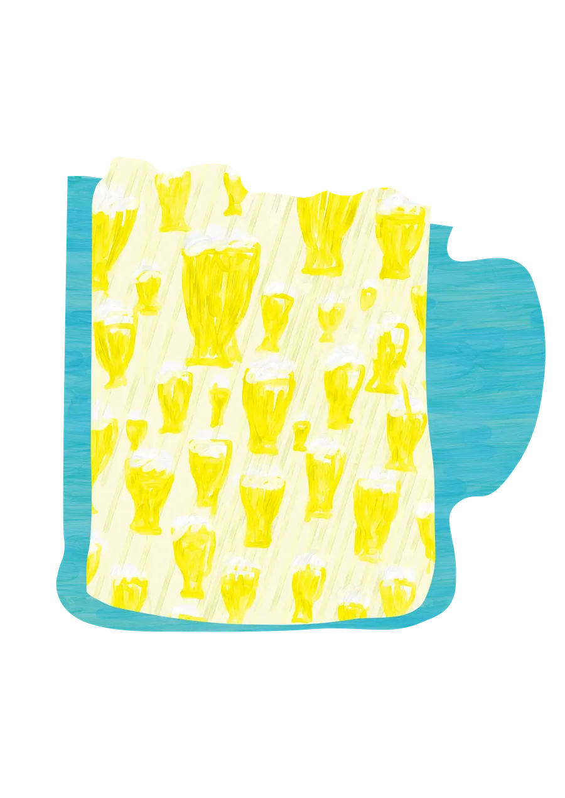
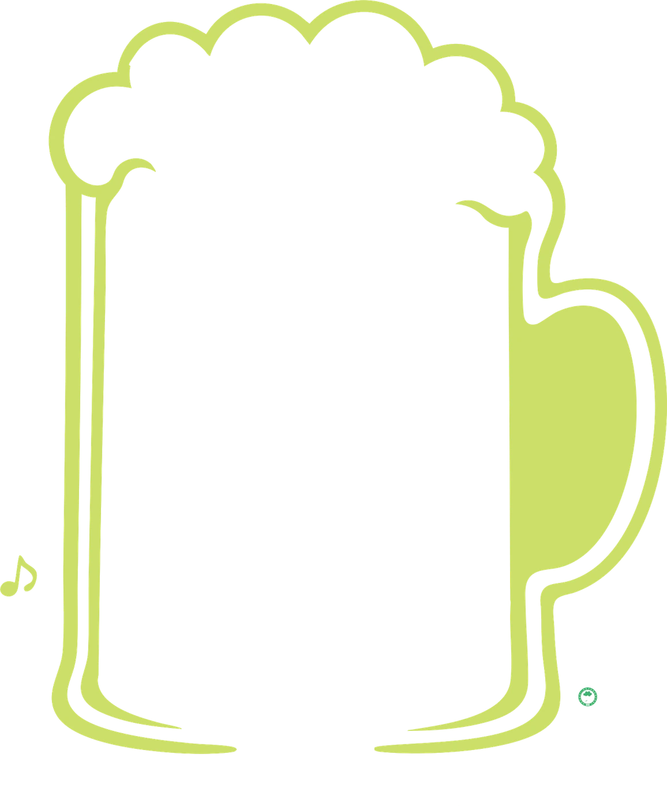
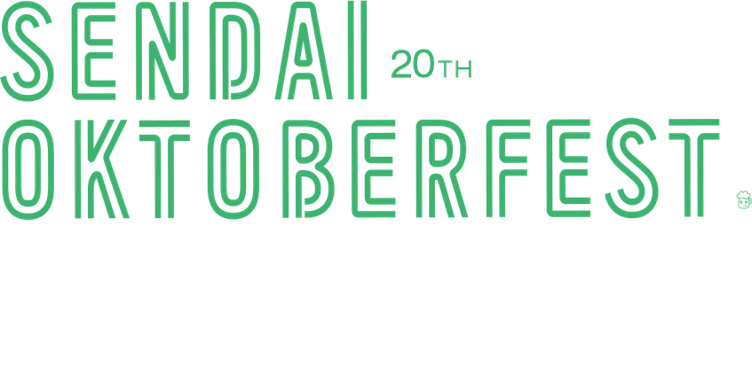
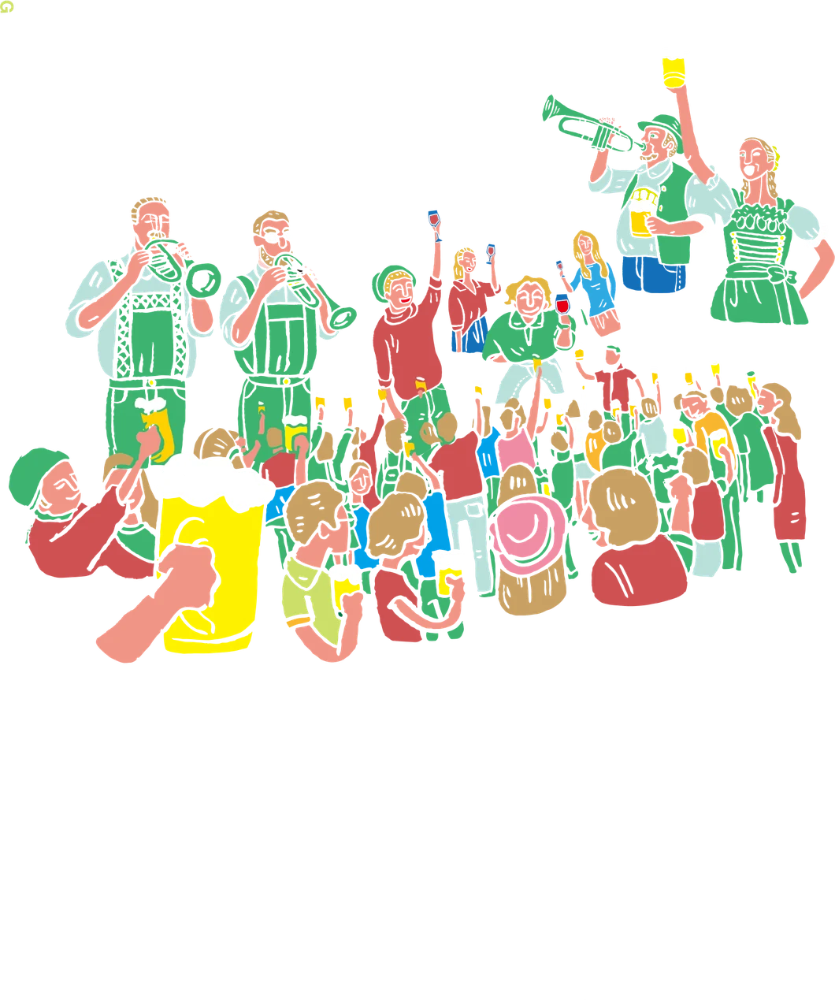
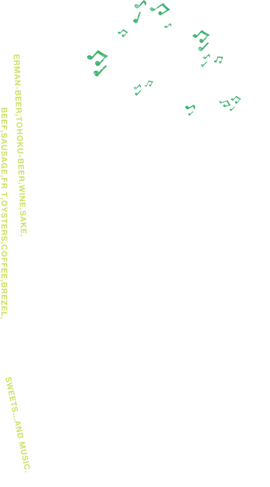
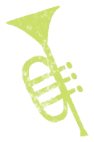
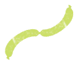
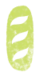
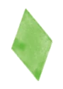
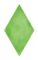
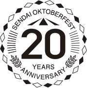
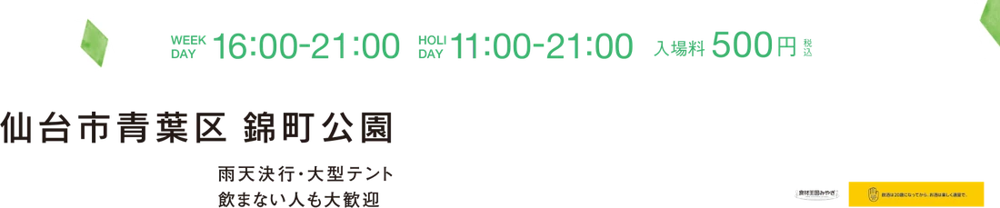
20YEARS
同じ公園で、同じ乾杯を、20回。
続けてこられたのは、毎年ここに集まってくださったみなさんのおかげです。
20回目の秋も、変わらずお待ちしています。
SCHEDULE & VENUE
2026.9/11金–9/27日
SPECIAL PARTNER & ORGANIZERS
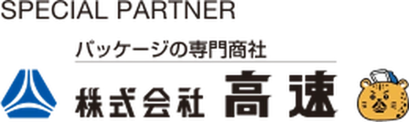
宮城県／仙台市／在日ドイツ商工会議所／バイエルン州駐日代表部／ドイツ観光局／（公財）宮城県国際化協会／（公財）仙台観光国際協会／仙台商工会議所／宮城EU協会／（公社）仙台青年会議所／河北新報社／tbc東北放送／仙台放送／ミヤギテレビ／khb東日本放送／Date fm／RADIO3／仙台リビング新聞社／machico／S-style／Kappo